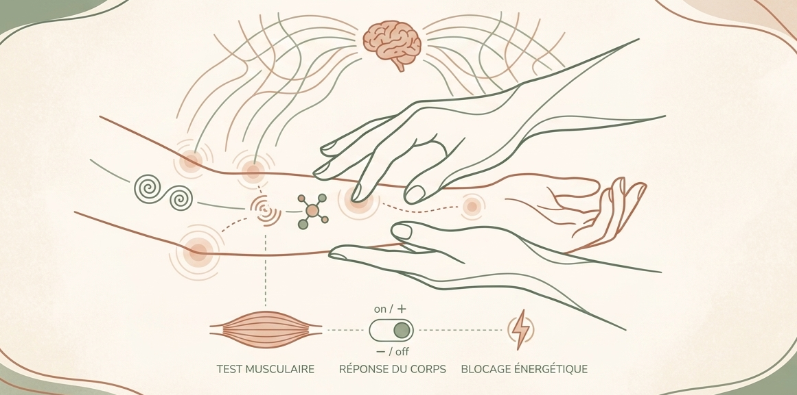

Un accompagnement bienveillant pour libérer vos blocages, retrouver votre énergie et vivre pleinement chaque journée grâce à la kinésiologie.
La kinésiologie est une approche globale et douce qui prend en compte l’être humain dans sa totalité : physique, émotionnelle et mentale.
Son principe de base est simple : notre corps enregistre tout. Chaque stress, chaque émotion non exprimée ou chaque traumatisme laisse une trace qui peut bloquer notre énergie et créer des déséquilibres (douleurs, fatigue, blocages).
Au cœur de ma pratique se trouve le test musculaire. Ce n'est pas un test de force, mais un outil de communication avec votre corps.

Une séance dure environ 1h (un peu moins pour les enfants) et se décline en trois temps :
Nous commençons par un échange bienveillant pour définir votre objectif de séance (stress, fatigue, blocage précis). C'est le moment de poser vos mots.
Grâce au test musculaire (légère pression sur le bras), nous identifions ensemble l’origine des blocages. Votre corps nous guide vers la technique de rééquilibrage la plus adaptée (acupression, mouvements doux, libération émotionnelle).
Nous terminons par un temps de retour au calme pour intégrer les bienfaits de la séance. Je vous partage, si besoin, de petits exercices simples à refaire chez vous pour prolonger votre élan.
La kinésiologie utilise le test musculaire pour identifier et libérer les blocages qui perturbent votre équilibre. Chaque séance est unique, pensée pour vous.
Libération des tensions émotionnelles, anxiété, surmenage. Retrouvez un état de calme et de confiance durable.
Régulation des cycles de sommeil, récupération de l'énergie vitale et amélioration de la qualité de vie au quotidien.
Soulagement des douleurs persistantes, tensions musculaires et déséquilibres posturaux grâce à des techniques douces.
Soutien pour les troubles de concentration, la dyslexie, la mémoire et les difficultés scolaires ou professionnelles.
Un jour, je me suis sentie vide, avec plus aucune énergie. Après des mois, voire des années à essayer de remonter la pente, j'ai découvert la kinésiologie. Une nouvelle énergie est née, et c'est un "nouveau moi" que j'ai retrouvé.
Mon approche est simple : pour bien fonctionner, notre corps et notre cerveau ont besoin du bon carburant. Quand il y a un manque ou un blocage, cela se voit partout : sur votre vitalité, sur votre humeur, sur votre sommeil, ou même sur le comportement de vos enfants.
Pourquoi venir me voir ?
Je me passionne particulièrement par la reconstruction d'un
burnout et l'accompagnement des enfants (trouble de l'attention, de l'apprentissage, des émotions), j'accueille
au cabinet toute personne qui sent son corps ou son esprit 'stagner'.
Stress, douleurs chroniques, blocages émotionnels ou simple besoin de retrouver son élan : je ne trouve pas le symptôme, je cherche la cause avec vous pour vous redonner la vitalité que vous méritez. Et si la solution était déjà dans votre corps ?
Pour toute première consultation, un acompte de 20€ est demandé lors de la réservation en ligne
afin de valider votre créneau. Cette somme sera bien entendu déduite du montant total le jour de notre
rencontre.
L'acompte est conservé en cas d'annulation moins de 48 heures avant
le rendez-vous, sauf cas de force majeure.
Classique
Séance adulte
€70
Jeunesse
Enfants, Ados
& Étudiants
€60
Le plus choisi
Pack "Relance"
Accompagnement Burnout
1 bilan + 4 séances
€320
Au lieu de 350€
Scolarité
Pack "Élan Scolaire"
Troubles apprentissage/attention
5 séances
€260
Au lieu de 300€
Apaisement
Pack "Sérénité"
Après une 1ère consultation
3 séances de suivi
€190
Au lieu de 210€
💳 Mode de paiement : carte bancaire, chèques ou espèces.
Vous hésitez encore ? N'hésitez pas à me contacter directement, je répondrai avec plaisir à toutes vos questions.
Cela dépend de votre situation. Certains ressentent des effets dès la première séance. En général, 3 à 6 séances suffisent pour des résultats durables. Nous définissons ensemble le rythme adapté.
Bien que non remboursée par la Sécurité Sociale, de nombreuses mutuelles proposent aujourd'hui une prise en charge. Je vous invite à consulter les détails et les aides possibles sur la page Tarifs.
Pour garantir la précision du test musculaire et la qualité de mon accompagnement, je privilégie uniquement les séances en présentiel au cabinet. Le contact direct et l'observation physique sont essentiels pour identifier au mieux vos besoins et vous offrir un véritable espace de déconnexion.
Pour la séance de votre enfant : Absolument.
Pour votre propre séance (adulte) :
Il est fortement recommandé de venir seul. Cela vous permet de libérer vos émotions en toute sécurité et
de profiter d'une bulle de sérénité totale, indispensable pour retrouver votre propre élan.
Non, les séances se déroulent habillé. Je recommande simplement des vêtements confortables permettant de bouger librement.
Une question avant de prendre rendez-vous ? Je vous réponds sous 24h ouvrées avec toute l'attention que vous méritez.